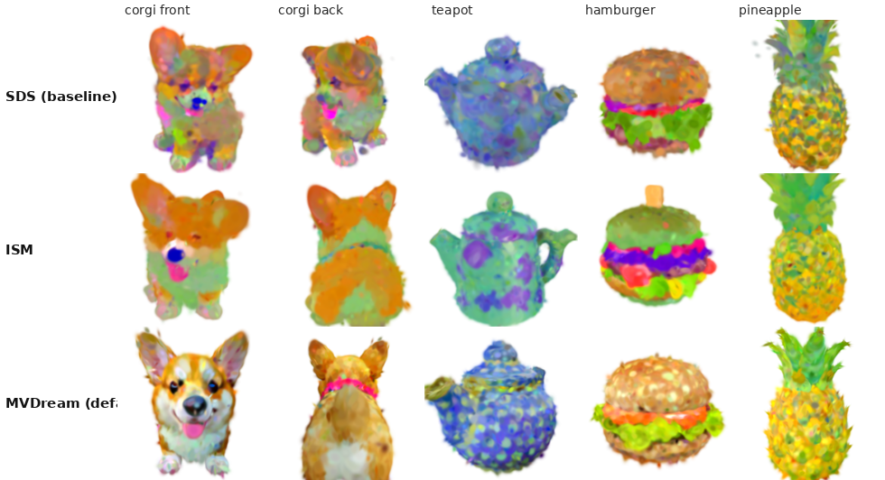

What runs. A text prompt is turned into an explorable 3D object by optimising 3D Gaussians with gradients from a frozen
diffusion model (official DreamGaussian code, commit 69a3c70, on an NVIDIA A100). The result is rendered in real time by my WebGL2 splatting
viewer inside a public web studio: anyone can submit a prompt, watch the optimisation live, and orbit the result.
| A2 MVP item | Status | What was built / evidence |
|---|---|---|
| Text prompt → frozen diffusion prior → score distillation (SDS) | done | SD 2.1-base, CFG 100, annealed t; gradients reach all Gaussian parameters at every step (verified, metrics.jsonl) |
| NeRF + differentiable volume rendering | changed | explicit 3D Gaussians + differentiable CUDA rasterizer: ≈47 s per 500-step run instead of hours, so I could iterate |
| Interactive novel-view viewer; progress view; seed/guidance/steps controls | done | own WebGL2 viewer, live loss/gradient/#Gaussian charts, snapshot scrubber, method picker |
| COULD: 3DGS, mesh export, variations | done | 3DGS is the core; textured OBJ via upstream export (CLI); public community gallery |
| COULD: VSD comparison | changed | VSD (LoRA training, hours) replaced by fast alternatives CSD, NFSD, ISM + MVDream, measured (Sec. 2) |
| Stage-2 mesh refinement; production UI | cut | not run; the studio is a working prototype, not a polished product |
I added CSD, NFSD and Interval Score Matching (LucidDreamer) as alternative distillation losses on the same frozen SD 2.1, with view-dependent
prompts (scripts/guidance_plus.py), and enabled upstream's MVDream multi-view guidance. All five were compared on 5 prompts, seed 0, 500 steps,
one free A100 per run. CLIP = ViT-L/14 prompt–view similarity over 8 views (evidence/guidance_comparison*.csv).
| guidance | CLIP | optimise | total | peak VRAM | visual result |
|---|---|---|---|---|---|
| SDS (upstream) | 26.38 | 47 s | 57 s | 4.4 GB | blotchy, over-saturated; corgi gets a 2nd face (Janus) |
| CSD | 24.65 | 51 s | 60 s | 4.4 GB | noisy, speckled |
| NFSD | 25.45 | 53 s | 63 s | 4.4 GB | natural colours, blurry |
| ISM (LucidDreamer) | 25.95 | 107 s | 115 s | 4.4 GB | Janus fixed, colours off |
| MVDream (default) | 25.94 | 91 s | 127 s | 10.7 GB | coherent, no Janus, sharpest |

MVDream step sweep (CLIP / total time):
| 300 steps | 26.4 | 86 s | clean, softer |
| 500 steps | 25.9 | 127 s | sharpest |
| 800 steps | 25.9 | 193 s | over-saturated |
| 1200 steps | 23.2 | 283 s | blown out |
CLIP barely separates the methods (it rewards saturated colours), so I judged visually. MVDream is the default (~2 min per object). 500 steps is the sharpest and longer runs over-saturate, so 500 is also the public cap.
Forward render of a 311k-Gaussian result along a fixed 360° orbit (120 frames, warm-up excluded, synchronised timing, evidence/performance.csv).
FPS vs resolution: 256²: 315 · 512²: 368 · 1024²: 175 · 2048²: 58 · 4096²: 17. FPS vs Gaussian count at 512² (k jittered clones): 0.3M: 354.5 · 1.2M: 144.6 · 5.0M: 44.8 · 19.9M: 11.7 · 39.9M: 5.5; peak VRAM 23.9 GB at
40M; CUDA out-of-memory at 80M (failure point). The A2 viewer target (≥30 FPS) holds up to 2048² and ≈5M
Gaussians. The browser viewer is also pushed ×1–×16 live in the video (it rendered on a GPU shared with another user's job, so those numbers are indicative only).
stabilityai SD repo now returns HTTP 401, so I used a mirror of the same weights (documented).<cfloat> in simple-knn; CUDA headers stored only under targets/ on this server; a 37 GB peak-VRAM reading caused by cudnn.benchmark (fixed to 4.4 GB, aborted log kept); and headless-Chrome WebGL context loss.
It also wrote most of the wrapper, guidance losses, viewer, studio, scheduler and benchmarks.Build/run: Linux + NVIDIA GPU: bash scripts/setup_env.sh, then python server.py or bash scripts/serve_public.sh (README, evidence/).
Demo video: 177.3 s screen capture of the running studio; only waits are fast-forwarded and labelled.